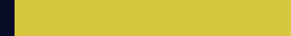
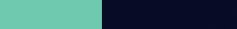

95%
1. PÅLITLIGHET
01. PÅLITLIGHET
Definition: Egenskapen att vara litad på, samt trovärdig av andra. 94% av svenskarna tyckte att pålitlig är en av de sju bästa egenskaperna. 95% ansåg att de har egenskapen och 49% ansåg att människor i deras bekantskapskrets har egenskapen.
Definition: Egenskapen att vara litad på, samt trovärdig av andra. 94% av svenskarna tyckte att pålitlig är en av de sju bästa egenskaperna. 95% ansåg att de har egenskapen och 49% ansåg att människor i deras bekantskapskrets har egenskapen.
49%


96%
2. ÖDMJUKHET
02. ÖDMJUKHET
Definition: Prestigelös och inte tro sig vara bättre än någon annan. 82% av svenskarna tyckte att ödmjukhet är en av de sju bästa egenskaperna. 96% ansåg att de har egenskapen och 41% ansåg att människor i deras bekantskapskrets har egenskapen.
Definition: Prestigelös och inte tro sig vara bättre än någon annan. 82% av svenskarna tyckte att ödmjukhet är en av de sju bästa egenskaperna. 96% ansåg att de har egenskapen och 41% ansåg att människor i deras bekantskapskrets har egenskapen.
41%


94%
3. HÄNSYNSFULLHET
03. HÄNSYNSFULLHET
Hänsynsfull. Definition: En människa som tar andras känslor åttanke och samtidigt visar omtanke. 79% av svenskarna tyckte att hänsynsfull är en av de sju bästa egenskaperna. 94% ansåg att de har egenskapen och 46% ansåg att människor i deras bekantskapskrets har egenskapen.
Hänsynsfull. Definition: En människa som tar andras känslor åttanke och samtidigt visar omtanke. 79% av svenskarna tyckte att hänsynsfull är en av de sju bästa egenskaperna. 94% ansåg att de har egenskapen och 46% ansåg att människor i deras bekantskapskrets har egenskapen.
46%


97%
4. MEDKÄNSLA
04. MEDKÄNSLA
Definition: Visar omtanke och viljan att hjälpa andra. 75% av svenskarna tyckte att medkänslighet är en av de sju bästa egenskaperna. 97% ansåg att de har egenskapen och 45% ansåg att människor i deras bekantskapskrets har egenskapen.
Definition: Visar omtanke och viljan att hjälpa andra. 75% av svenskarna tyckte att medkänslighet är en av de sju bästa egenskaperna. 97% ansåg att de har egenskapen och 45% ansåg att människor i deras bekantskapskrets har egenskapen.
45%


95%
5. TOLERANS
05. TOLERANS
Definition: Att kunna acceptera andras känslor, vanor och tro, jämt imot dina egna. 67% av svenskarna tyckte att tolerans är en av de sju bästa egenskaperna. 95% ansåg att de har egenskapen och 43% ansåg att människor i deras bekantskapskrets har egenskapen.
Definition: Att kunna acceptera andras känslor, vanor och tro, jämt imot dina egna. 67% av svenskarna tyckte att tolerans är en av de sju bästa egenskaperna. 95% ansåg att de har egenskapen och 43% ansåg att människor i deras bekantskapskrets har egenskapen.
43%

95%
6. GENEROSITET
06. GENEROSITET
Definition: Att vara snäll och visa omtanke, att dela med sig av t.ex pengar och andra värdesaker till andra. 63% av svenskarna tyckte att generös är en av de sju bästa egenskaperna. 95% ansåg att de har egenskapen och 43% ansåg att människor i deras bekantskapskrets har egenskapen.
Definition: Att vara snäll och visa omtanke, att dela med sig av t.ex pengar och andra värdesaker till andra. 63% av svenskarna tyckte att generös är en av de sju bästa egenskaperna. 95% ansåg att de har egenskapen och 43% ansåg att människor i deras bekantskapskrets har egenskapen.
43%

95%
7. ENGAGEMANG
07. ENGAGEMANG
Definition: En människa som håller sina löften och visa dedikation till allt dem gör. 58% av svenskarna tyckte att engagemang är en av de sju bästa egenskaperna. 95% ansåg att de hade egenskapen och 43% ansåg att människor i deras bekantskapskrets har egenskapen.
Definition: En människa som håller sina löften och visa dedikation till allt dem gör. 58% av svenskarna tyckte att engagemang är en av de sju bästa egenskaperna. 95% ansåg att de hade egenskapen och 43% ansåg att människor i deras bekantskapskrets har egenskapen.
43%